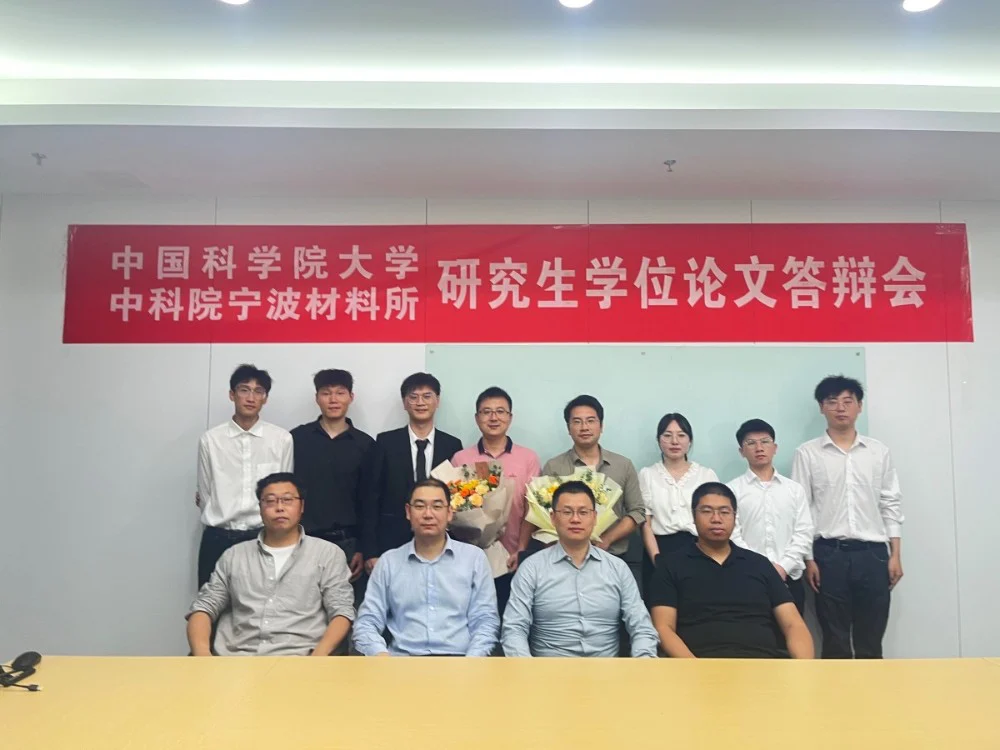
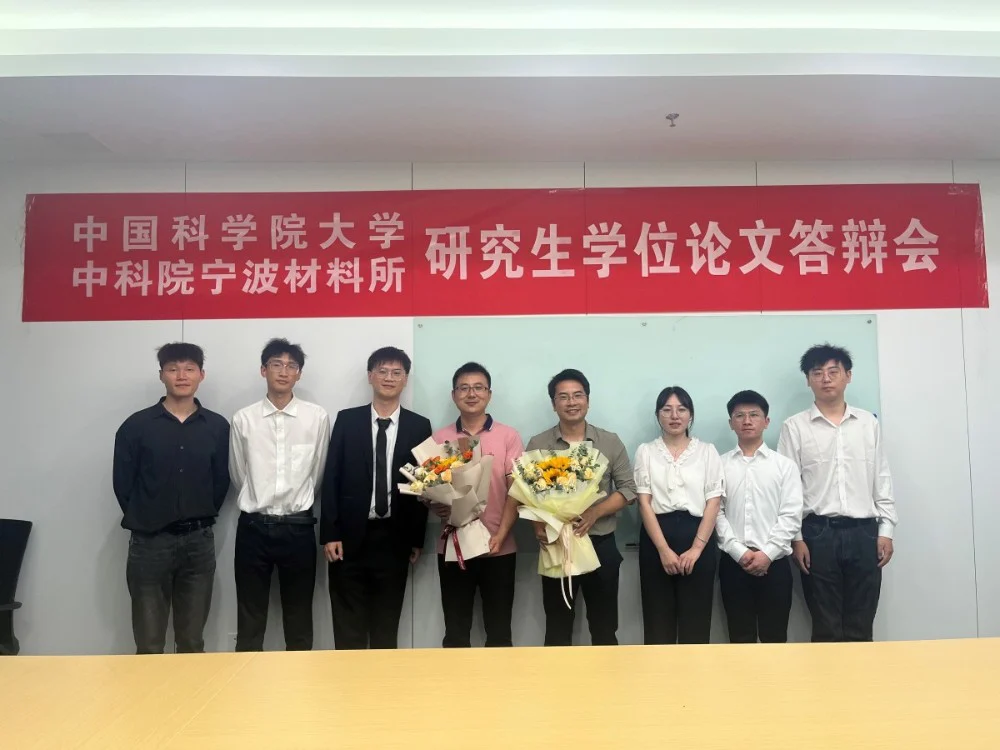

恭喜2020级六位硕士研究生顺利通过毕业答辩
2023年5月16日，IMED团队2020届硕士研究生毕业论文答辩会在医工所4002会议室顺利举行。出席本次会议的有团队负责人赵一天老师、副研究员张炯老师和南京理工大学吴烨教授、齐鲁工业大学陈达副教授、华北电力大学苏攀副教授，并且特别邀请了来自华南理工大学的许言午教授担任本次答辩委员会主席。部分IMED团队成员及陈老师团队成员旁听了本次答辩会。
首先，答辩会由赵一天研究员主持，详细的介绍了参与本次答辩会的六位同学，他们分别是来自浙江工业大学的许聪、陈方胜，方利鑫和来自宁波大学的沙登峰以及来自国科大的吴文俊和白艳苗。接着，由担任本次答辩委员会的顾愿愿老师宣读六位同学的盲审情况，所有同学均以优异的成绩顺利通过盲审。最后，由本次委员会主席许言午老师宣读答辩流程及规则。
在答辩过程中，每位同学全面而清晰地陈述了自己的研究成果。他们深入浅出地介绍了论文的研究背景，准确阐述了研究意义，并详细展示了研究的内容和结论。这一过程不仅展现了IMED成员深厚的学术素养，还体现了他们在研究领域的专业能力和对学术问题的深刻理解。接着，由答辩委员会老师针对每位同学的陈述内容和论文细节提出了一系列深入问题。在面对这些问题时，同学们以谦虚而坚定的态度，聚精会神地倾听每位评委的提问，清晰而准确的回答了每位老师的问题。这些深度问题的提出和同学们的回答相互促进，共同创造了一个充满学术互动和知识碰撞的氛围。在投票表决环节中，每位评委都依据严谨的标准和个人的专业观点进行评分，并最终达成了一致意见，同意六位同学顺利通过本次答辩。
会议最后，每位研究生同学都表达了最诚挚的感谢之情，感谢各位评委老师们耐心和细致的指导，感谢团队老师的一路指导，感谢团队师兄师姐在科研与生活中的帮助与关心，感谢在IMED中遇到的每一个人，是你们的支持与关心让我们有信心继续前行，继续追求更高的目标！

